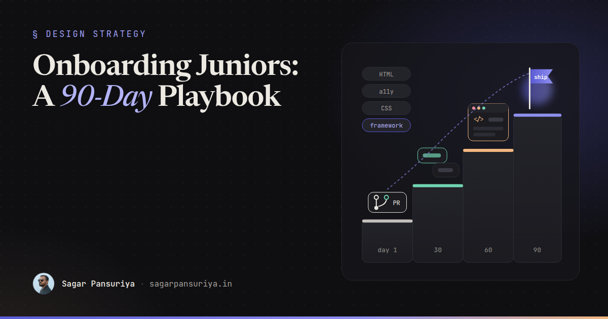
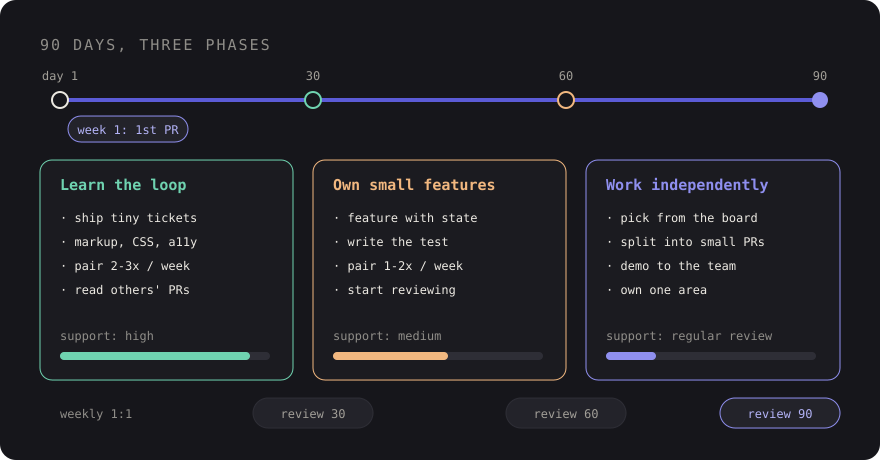

Onboarding Junior Frontend Developers: A 90-Day Playbook from a Tech Lead


Picture a junior developer's first Monday. They get a laptop, a Slack invite, a link to a wiki page last updated two years ago, and the words "have a look around the codebase". By Friday they've installed things, broken things, and quietly concluded that everyone else knows something they don't.
Most onboarding fails not because juniors are slow, but because nobody decided what "onboarded" means. As a tech lead, I think of it as a 90-day project with a clear goal: by day 90, this person can pick up a normal-sized ticket, ask good questions, and ship it with a regular review. Everything in the plan serves that goal.
This is the playbook I'd hand to any lead bringing a junior frontend developer onto a team working with Laravel, Blade, Livewire, Tailwind, WordPress or React. Adjust the stack, keep the structure.
Before day one
Half of a good first week happens before the person arrives.
- Accounts ready. Git hosting, the project board, chat, staging access, design files. Nothing kills momentum like waiting three days for a permission.
- A setup doc that has been tested recently. The best way to test it is
to ask the last person who joined to follow it on a clean machine. Better still, make
the local environment one command: a Docker setup, Laravel Sail, or a documented
composer install && npm install && npm run devsequence. - A named buddy who isn't the lead. Juniors will ask a peer things they won't ask their manager.
- Three "good first issues" picked in advance. Small, real, visible:
a copy fix, a spacing bug, a missing
altattribute.
Week one: environment and a first tiny PR
The goal for week one is not learning the codebase. It's completing the full loop once: clone, run, change, commit, open a pull request, get a review, merge, see it on staging. Every later week reuses that loop.
- Day 1: environment running locally, a walkthrough of the product as a user, and a short chat about how the team works.
- Day 2: a guided tour of one feature, from route to controller to Blade view (or component tree) to CSS. One vertical slice beats a tour of every folder.
- Day 3 to 4: first ticket, with the buddy nearby. Something like fixing a button's focus style.
- Day 5: the PR is merged and deployed. Celebrate it, publicly and briefly.
A first PR can be tiny and still teach everything about how you work: branch names, commit messages, the PR template, how review comments are phrased, and what CI checks.
git switch -c fix/newsletter-button-focus
# edit resources/views/components/button.blade.php
git commit -m "Add visible focus ring to newsletter button"
git push -u origin fix/newsletter-button-focus
Days 1 to 30: learn the loop
Goal: ship small, well-defined tickets with support, and understand how the project is put together.
- Two to three pairing sessions a week, with the junior driving most of the time.
- Tickets that touch markup and styling first: layout bugs, responsive fixes, accessibility improvements. They're low risk and teach the design system.
- Read the codebase's conventions doc (or write it together if it doesn't exist, which is a surprisingly good onboarding exercise).
- Sit in on one code review of someone else's PR each week, just reading.
Days 31 to 60: own small features
Goal: take a small feature from ticket to production with lighter guidance.
- A feature with a bit of state: a filter with Alpine, a Livewire form with validation, a React component with props and a loading state.
- Write the test for it, even a simple one. Testing is part of "done", not a senior skill.
- Start reviewing PRs, with a focus on asking questions rather than approving.
- Pairing drops to one or two sessions a week, and shifts from "how" to "why".
Days 61 to 90: work independently
Goal: pick up a normal ticket from the board, estimate it roughly, and deliver it with a regular review.
- Choose tickets from the board instead of being assigned curated ones.
- Break a medium ticket into smaller PRs without being asked.
- Demo their work in a team meeting.
- Own one small area: the button component, the 404 page, the form styles.
A skills ladder: fundamentals before frameworks
The most common gap I see in junior frontend developers is not framework knowledge. It's
the layer underneath. Someone can build a React component but can't explain why a
<div> with a click handler isn't a button. So I teach in this order,
and each rung builds on the last:
| Rung | What "good" looks like |
|---|---|
| Semantic HTML | Picks the right element; forms have labels; headings form an outline |
| Accessibility basics | Keyboard-only use works; visible focus; sensible alt text; contrast checked |
| CSS layout | Comfortable with flexbox and grid; understands the cascade and specificity |
| Responsive design | Mobile-first; knows when to use media vs container queries |
| JavaScript and the DOM | Events, async/await, fetch, reading errors in DevTools |
| The team's framework | Blade components, Livewire, Alpine or React, following house conventions |
| Tooling and quality | Vite, linting, tests, reading a CI failure |
This isn't strictly sequential. A junior will write Alpine in week two. But when you review their work, check the lower rungs first. A beautifully structured component that isn't keyboard accessible isn't done.
Pairing that actually teaches
Pairing is the highest-leverage thing you can do, and also the easiest to do badly. A few rules that help:
- The junior drives. If the senior types, the junior watches and forgets.
- Think out loud, both ways. Ask "what do you think happens if…" before running the code.
- Keep it short. 45 to 60 minutes with a clear goal beats an afternoon.
- Show the debugging, not just the answer. How you read a stack trace, search the codebase, or narrow a CSS bug in DevTools is the real lesson.
Using AI assistants responsibly while learning
Juniors today will use AI coding assistants whether you have a policy or not, so it's better to talk about it openly. These tools can be excellent tutors, and they can also let someone ship code they don't understand, which shows up later as bugs nobody can explain.
The guidelines I'd give:
- Explain before you commit. If you can't explain every line in your PR to a reviewer, it's not ready. That applies to generated code too.
- Ask for explanations, not just answers. "Why does this flex item overflow?" teaches more than "fix this layout".
- Try first, then ask. Spend fifteen minutes on a problem yourself before prompting. The struggle is where learning happens.
- Verify against the docs. Assistants can suggest outdated APIs or options that don't exist. Check MDN, the Laravel docs, or the library's own docs.
- Follow the team's rules on what code and data can be shared with external tools.
The goal isn't to avoid AI. It's to make sure the junior is building judgement, because judgement is the thing the tools can't supply for them.
Feedback cadence
Juniors rarely ask "how am I doing?", so build the answer into the calendar.
- Daily: a quick check-in with the buddy during the first two weeks.
- Weekly: a 30-minute one-to-one with the lead. What went well, what was confusing, what's next.
- Day 30, 60 and 90: a written review against the goals for that phase. Be specific: "your PR descriptions now explain the why" beats "good progress".
- In code review: label comments as blocking or non-blocking, and explain the reason, not just the change. Praise good decisions in review too.
Signs it's working
- Their questions shift from "how do I" to "should I" and "why do we".
- PRs get smaller and descriptions get better.
- They find the answer in the codebase before asking.
- They catch something in someone else's PR.
- They point out a gap in the setup doc and fix it.
And the warning signs: long silences followed by huge PRs, the same review comments repeating, or never asking questions at all. None of those mean the person is a bad hire. They usually mean the plan needs adjusting: smaller tickets, more pairing, or a clearer definition of done.
The checklist
- Accounts, setup doc and three good first issues ready before day one.
- A named buddy who isn't the lead.
- First PR merged and deployed in week one.
- Written goals for days 30, 60 and 90, shared with the junior.
- Fundamentals-first review: HTML, accessibility and CSS before framework polish.
- Regular pairing with the junior driving.
- Clear, open guidelines for AI assistants.
- A weekly one-to-one and written reviews at each milestone.
Onboarding is one of the few things a tech lead does that compounds. A junior who's onboarded well becomes the buddy for the next one, and your setup doc gets better every time.
Discussion